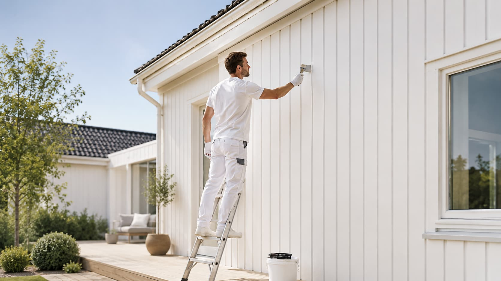

De nymalede flader holder sig pæne med regelmæssig, skånsom rengøring og god udluftning. Undgå hårde kemikalier, og tør fedt og damp af væggene jævnligt for at bevare farve og glans.
Hvad indgår i behandlingen?
Maling, der ser tør ud, er ikke nødvendigvis fuldt hærdet. Undgå at vaske, rengøre eller udsætte de nymalede flader for belastning de første to til fire uger for det bedste langsigtede resultat.
Det totale regnestykke
For tykke lag kan medføre afskalning og forlænger tørretiden. Det handler om det rigtige antal lag udført korrekt frem for at bruge flest muligt.
Aftør mærker hurtigt og rengør med skånsomme midler. Behandl mindre ridser løbende for at bevare glans og finish over tid.
Helbredseffekter
Underlagets tilstand
________________


________________
Danskerne er generelt konservative i deres farvevalg til boligen, men der er klare tendenser, der præger de mest populære vægfarver.
Malertrends 2026 – farver, overflader og stilarter
Vandbaseret maling kan holde op til fem år, hvis den er forseglet korrekt og opbevaret under de rette betingelser. Oliebaseret maling har typisk lidt kortere holdbarhed.
Omskrivning udført af Claude (Anthropic) – maj 2026.
Indendørs maling hele året
Tone-i-tone
Vedligehold
Brug speciel flisemaling
At male et loft er en udfordring for mange.
Professionelt malerarbejde er en af de mest synlige og omkostningseffektive investeringer i din boligs vedligehold og appelkraft over for potentielle købere.
Hvid i dens mange nuancer – fra kalkbleg til varm råhvid – er fortsat den mest brugte vægfarve i danske boliger. Den er neutral, tidløs og forstærker lysindfald.
Prisen afhænger af opgavens omfang, rummets størrelse, overfladernes stand og valg af materialer. En mindre opgave som maling af et enkelt rum starter typisk fra 2.000–4.000 kr., mens en fuld lejlighed kan koste 8.000–25.000 kr. Kontakt os for et gratis og uforpligtende tilbud.
Du kan nemt indhente et gratis tilbud via vores hjemmeside. Vi gennemgår opgaven med dig, vurderer overfladerne og giver dig en klar og gennemsigtig pris – uden skjulte tillæg.
Vi bestræber os på at starte hurtigst muligt. Kontakt os, og vi finder en dato, der passer til din tidsplan.
Ja. 1Maler har et landsdækkende netværk af erfarne malere og udfører opgaver i hele Danmark – fra København til Aalborg og alt derimellem.
I de fleste tilfælde ja. Vi arbejder rum for rum, og moderne vandbaseret maling lugter minimalt og tørrer hurtigt. Vi tilpasser arbejdsplanen, så hverdagen forstyrres mindst muligt.
Det er en fordel, men ikke et krav. Vi hjælper med at flytte og afdække møbler og inventar inden arbejdet begynder, så du ikke behøver gøre det selv.
Forbehandling omfatter rengøring af overflader, spartling af huller og revner, slibning og eventuelt grunding. Det er det vigtigste trin for et holdbart og flot resultat – og det er altid inkluderet i vores arbejde.
Vi bruger kvalitetsmaling fra anerkendte leverandører tilpasset den konkrete opgave. I vådrum bruges fugtbestandig maling, til radiatorer varmebestandig maling, og til børneværelser vaskbar maling. Vi rådgiver dig om det bedste valg til dit hjem.
Ja. Vores malere rådgiver om farver, glansgrader og materialer baseret på rummets lysindfald, størrelse og indretning. Vi hjælper dig med at træffe det rigtige valg, inden penslen rører væggen.
Glans angiver, hvor meget lys en overflade reflekterer. Mat (glans 2–5) egner sig til stue og soveværelse, halvblank (glans 20–40) til køkken og badeværelse, og blank (glans 60+) til dørkarme og vinduesrammer. Vi guider dig til det rigtige valg.
Ja. Vi udfører malerarbejde for erhvervskunder, boligforeninger og udlejere. Kontakt os for en snak om din specifikke opgave.
Vi gennemgår altid arbejdet med dig ved aflevering. Er der noget, der ikke lever op til forventningerne, udbedrer vi det. Din tilfredshed er vores garanti.
Et enkelt rum tager typisk én dag. En fuld lejlighed 2–4 dage, og et større hus 5–10 dage afhængigt af omfang og forbehandling. Vi giver dig en præcis tidsplan i forbindelse med tilbuddet.
Ja. Vi bruger produkter specielt udviklet til fugtige miljøer og sikrer en holdbar finish, der modstår damp og fugt over tid.
Ja. Vi maler flyttelejligheder og sikrer, at lejligheden lever op til udlejerens krav ved fraflytningssyn. Vi kender standarderne og leverer et dokumenterbart resultat.